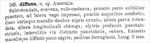

Click on images to enlarge
{kind=link}

Fig. 1. Paropsis diffusa description
Name
Paropsis diffusa Chapuis, 1877
Corresponds to
This is very likely the same species as Ta30, see "Diagnosis and Notes" below.
Diagnosis and Notes
Blackburn did not see the type of this species, but implies that he had specimens carefully compared to the type. He places diffusa species into his "Group iv", a mixed bag of species characterized by (1) the sides of the prothorax evenly arched (not mucronate in front), (2) the puncturation of the elytra in about 20 rows, and (3) the elytra devoid of verrucae. This group includes just a few species of non-verrucose Trachymela - the bulk of its species are now placed in Peltoschema or Paropsisterna. In his key to the species in this group, diffusa is placed next to orbicularis in the key, and identified by:
AA. Subbasal impression of elytra wanting or almost wanting;
B. Elytral edging of scutellum convex and ridge-like;
CC. Interval between the two intermediate spots of the prothorax much greater than between the intermediate and lateral spots.
A common species in N.S.W. on Angophora is Ta30, a species in the orbicularis-group and lacking verrucae. It commonly has four black markings on the elytra, a roughly round one and a longitudinally extended one on each side, and their placement would agree with couplet CC in Blackburn's key. Typical specimens are about 6 mm in length and have diffuse black spots on the elytra, as mentioned by Chapuis in his description. In most other respects, Ta30 is very similar to Ta70 (T. orbicularis).
Type specimen
Not examined.
Original description
Translation of original description (Figure 1) by ChatGPT, 04/2026:
Somewhat rounded, convex, reddish-chestnut. Pronotum sparsely and finely punctate, vaguely impressed at the sides, with larger punctures crowded there; the disc on each side adorned with two black spots, one small and rounded, the other longitudinal and oblong. Elytra deeply punctate-striate, the interstices scarcely distinctly punctulate; the suture, the humeri, and diffuse spots pitchy-black; legs ferruginous. Length 6 mm. Australia.
References
Blackburn, T. 1897, "Revision of the genus Paropsis. Part II", Proceedings of the Linnean Society of New South Wales, vol. 22, 166-189 (page 182).
Chapuis, F. 1877, "Synopsis des espèces du genre Paropsis", Annales de la Société Entomologique de Belgique (Comptes-rendus), vol. 20, 67-101 (page 91).
Copyright © 2026. All rights reserved.